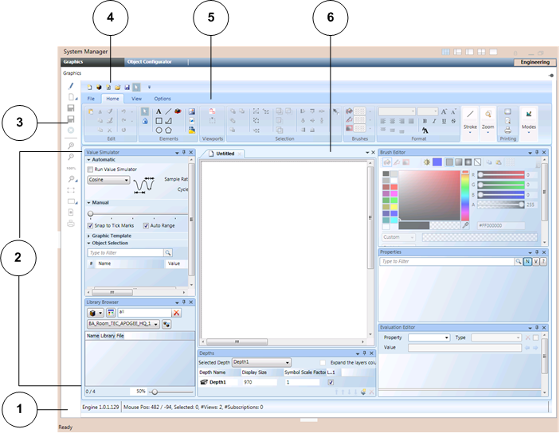

Graphics Editor Workspace
The Graphics Editor window consists of several tabs, a quick access toolbar, a status bar, multiple views for both viewing information and completing specific tasks, and a work area that contains tabbed drawing board panes that house the canvas upon which graphics are drawn and edited. Additional tools and components available in the Graphics Editor include right-mouse click menus, vertical and horizontal scroll bars, navigational tools, and keyboard shortcuts.

Graphics Editor User Interface | |
| Description |
1 | Status Toolbar |
2 | Dock Panel with Views |
3 | Graphics Editor toolbar |
4 | Quick Access Toolbar |
5 | Tabs |
6 | Work area |